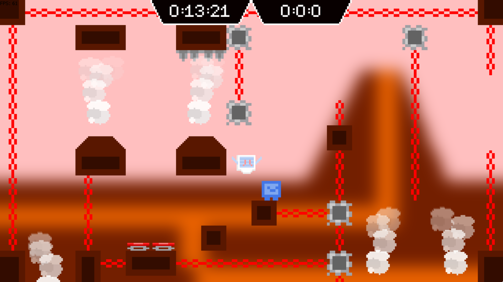
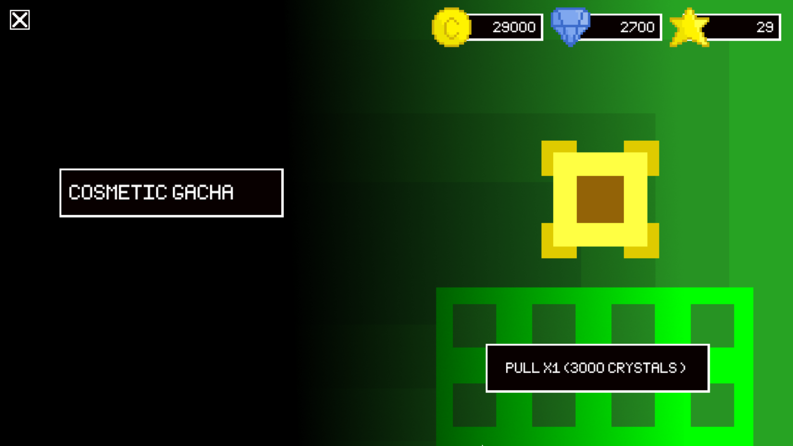
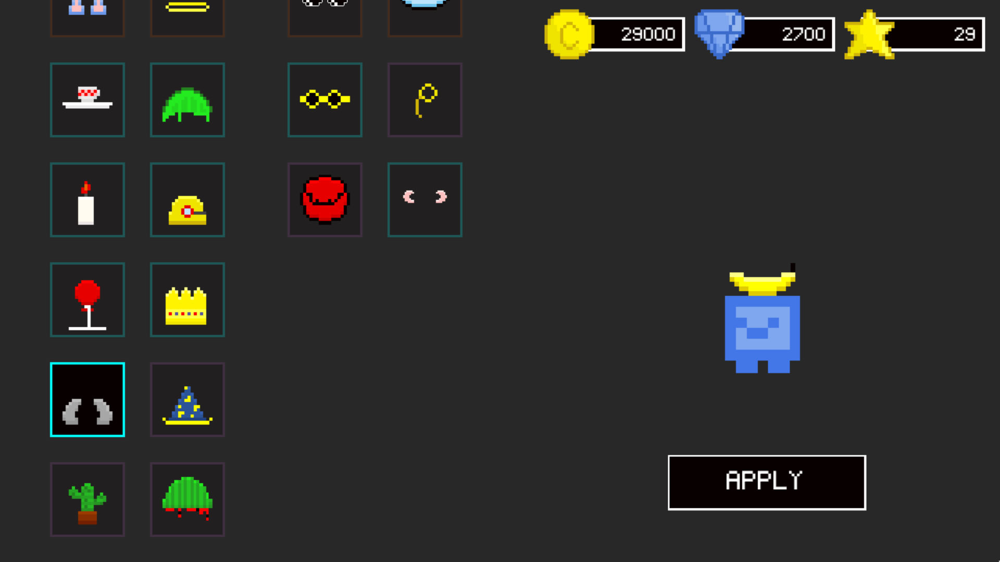
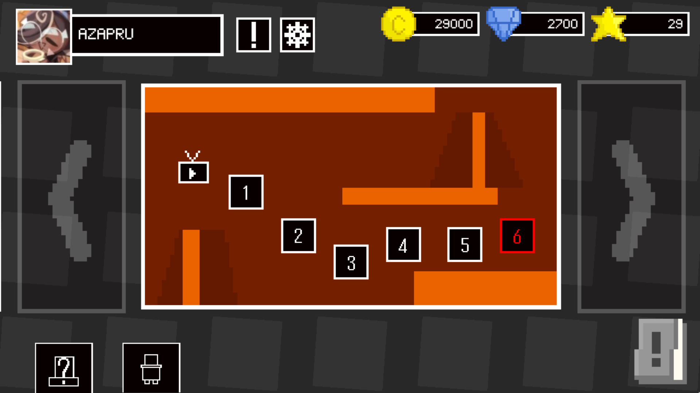
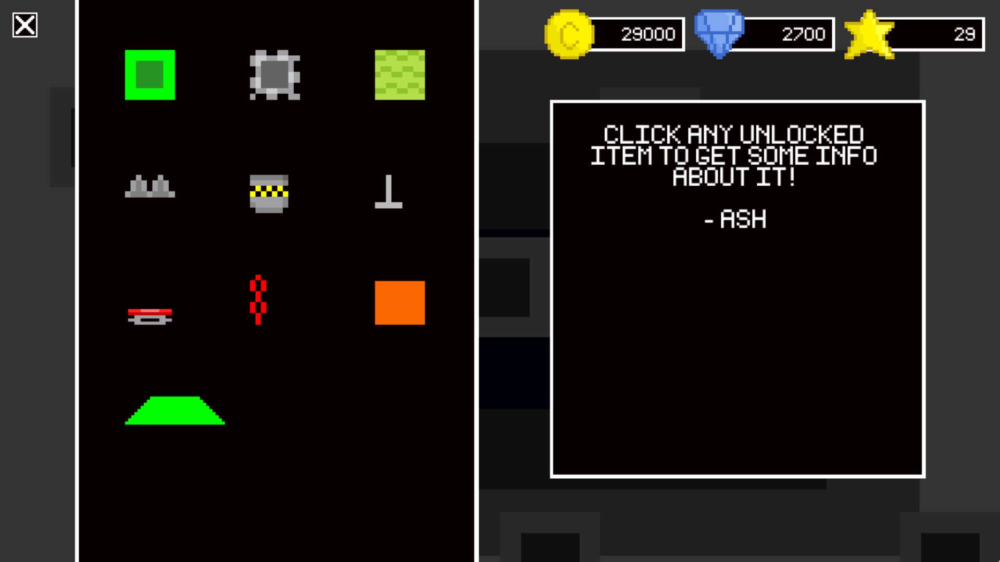
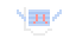

Platblue Beats is a rhythm game made and released by Azapru on September 10th, 2022, the game has 2 game modes, Beats and Rhythm
Gameplay

Gameplay is very similar to original HP, even physic is basically the same even that it's completly remade, the difference is that some items works different (like player can actually stick to slime block, instead of it giving more jumps) and player moves more smoothly, that's because this game runs in much higher resolution (1280x720).
After completing 5 levels, new rooms gonna have different color. First room is green and last playable room is dark grey. Each new room color gets harder and have some kind of new item.
Cosmetics/Gacha System


In this game player can get and equip cosmetics by using gacha system. Gacha have random chance of giving common, rare, epic or legendary cosmetic, one pull costs 3000 in-game crystals.
Map

Instead of simple level selection menu there's map with levels on each "map" there is 6 levels, instead of levels getting harder each color/map, it gets harder every level and difficulty "resets" every new map, basically every 1st level will be more easy while 6st always will be harder.
World map also works as main menu for the game, most menus can be accessed from here!
Blockpedia

Blockpedia is a menu where you can learn about all items and blocks!
Items in blockpedia are unlocked once you enter a level with them for first time.
Platblue come-back
Platblue is going to come back, but it's not sure how and when. It might be coming back on Clickteam but it also might come back remade on different engine (like Godot or Unity) with same exact features and gameplay!
Main characters

Plat (on left) is a dumb little cube thing that can, well, jump and walk. His best friend is Ash (on right) she's very smart and know a lot of thing, her system have gps, internet connection and even can play audio!
Plat mostly spends his time in his house.
Story
Platblue story starts in lab, Plat and Ash got teleported because of world core that broke for unknown reason, Together they are on their way to the world core to fix it using Ash's special technology.